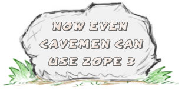
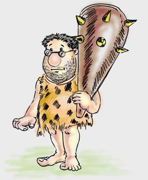

What is Grok?
Grok is a web application framework for Python developers. It is aimed at both beginners and very experienced web developers. Grok has an emphasis on agile development. Grok is easy and powerful.
You will likely have heard about many different web frameworks for Python as well as other languages. Why should you consider Grok?
- Grok offers a lot of building blocks for your web application.
- Grok is informed by a lot of hard-earned wisdom.
Grok accomplishes this by being based on Zope 3, an advanced object-oriented web framework. While Grok is based on Zope 3, and benefits a lot from it, you do not need to know Zope at all in order to get productive with Grok.
Grok News
- 2007-09-24:
- The first week of October (1-5 October) we are having the Grok Neanderthal Sprint in Cologne, Germany. This sprint is generously sponsored by GfU Cyrus.
Who is Grok?
Grok is a friendly caveman from the Stone Age. He has a big club that he hunts mammoths with. He will also use this club to smash anything he doesn't like.
"ME GROK SMASH ZCML!"
The word grok comes from the novel Stranger in a Strange Land by Robert A. Heinlein, and is defined in his book as:
Grok means to understand so thoroughly that the observer becomes part of the observed - to merge, blend, intermarry, lose identity in group experience.
Watch Grok in Action
- Simple ToDo application is a tutorial-style introduction to Grok by Philipp von Weitershausen.
- Introduction to Grok is a talk given by Philipp von Weitershausen to a group of Zope developers.
What does Grok code look like?
import grok
class HelloWorld(grok.Application, grok.Model):
pass
class Index(grok.View):
pass
index = grok.PageTemplate("""
<html><body>
<p>ME GROK HELLO WORLD!</p>
</body></html>
"""")
- Herd of Mammoths: a very simple application that only goes a bit beyond "hello world".
- Grokstar: a simple blog application written with Grok.
- Grok Wiki: a simple wiki application written with Grok.
- Paleosoft.org: a collection of sample apps written in Grok/Zope3 by Luciano Ramalho as part of the Google Summer of Code.
ME GROK HYPERLINKS!
- Get the latest version in the form of a Grok Python Package from the Python Cheese Shop.
- Feature requests and bugs are tracked in the Grok Issue Tracker at LaunchPad.
- Grok-dev mailing list for discussing the development of Grok.
- There is a Grok IRC channel on freenode.net
The source code to Grok is kept in the Zope SVN repository. You can do an anonymous check out of the latest version of Grok with the following command::
svn co svn://svn.zope.org/repos/main/grok/trunk grok
ME GROK MINI-TUTORIALS!
- Newbie Search HowTo Sebastian Ware
- Newbie Macros HowTo Uli Fouquet
- Newbie XMLRPC HowTo Kushal Das
ME GROK SPRINTS AND BLOGS!
Grok development is often done in the form of sprints. A sprint is a when a group of developers get together in the same place and all work on a focused set of tasks.
- Martijn Faassen's blog entry details the first Grok sprint.
- Jan-Wijbrand Kolman blogged about the second Grok sprint, and Martijn Faassen blogged about it as well.